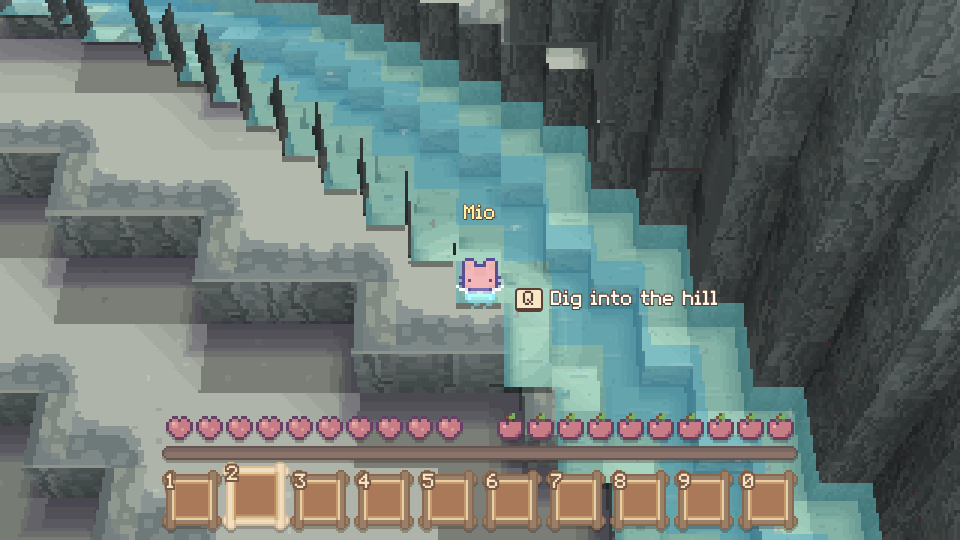

2026-11-12
Hills, holes, and water you can see into
On the 11th the flat world got relief: hills, terraces, stone peaks, then real heights and biomes. You hop up a step by walking into it, and you can drop off any edge.

The world in its first, flat look, on 11 November: forest, terraces, stone
The underground, six times
Going under the ground was hard to show in a view from above. We tried: a step that looks like walking into a house, layers with the level below always visible, the level below only through holes, always only the level you are on, the underground drawn like a house, and finally a world made of blocks. Each one looked fine on its own and broke somewhere else. The lesson we kept: stop patching the same thing a third time, rethink the method.
Water
Water became a see-through layer: four depths, a bottom with sand ridges and pebbles wobbling under it, light patterns, small waves. You can read how deep it is before you jump in.

A river down a stone gorge, today